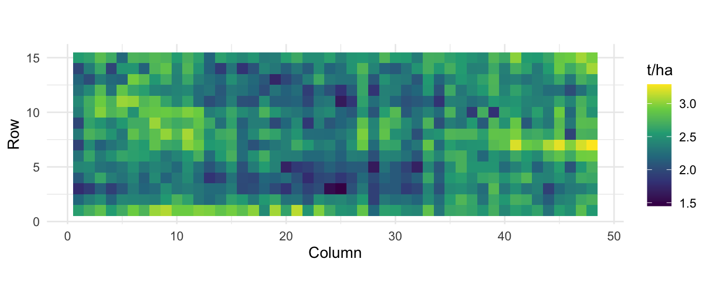
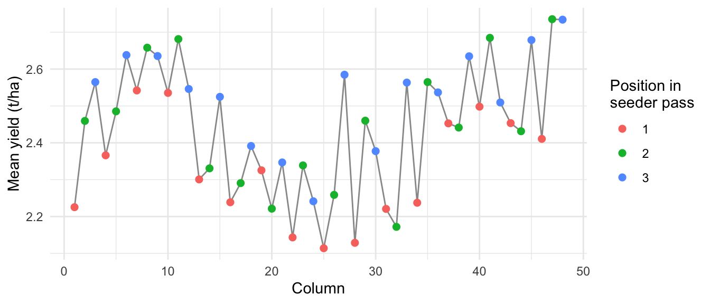
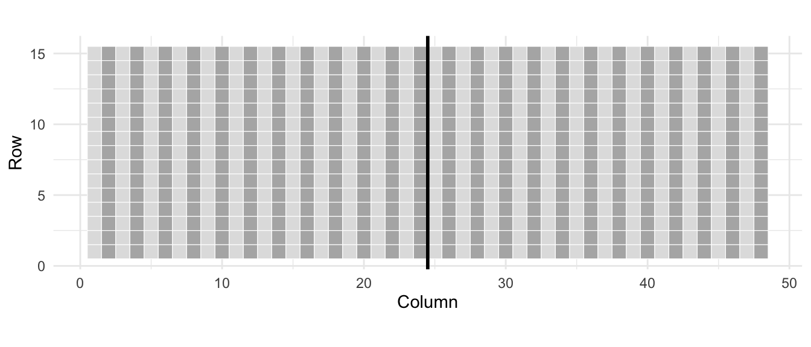
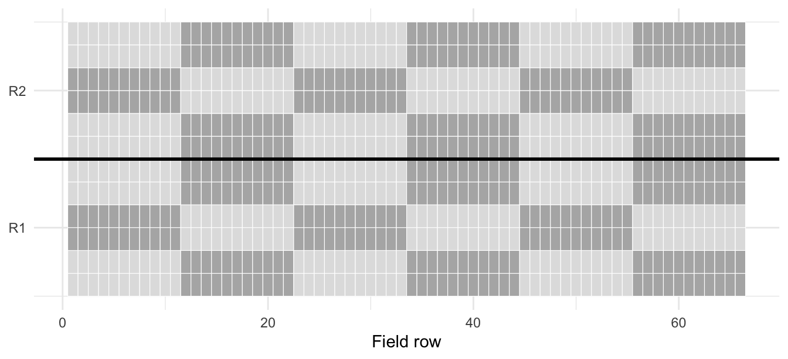
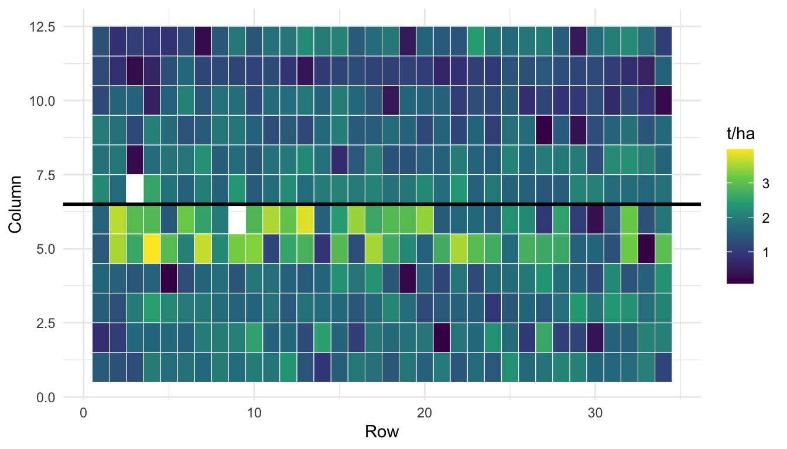
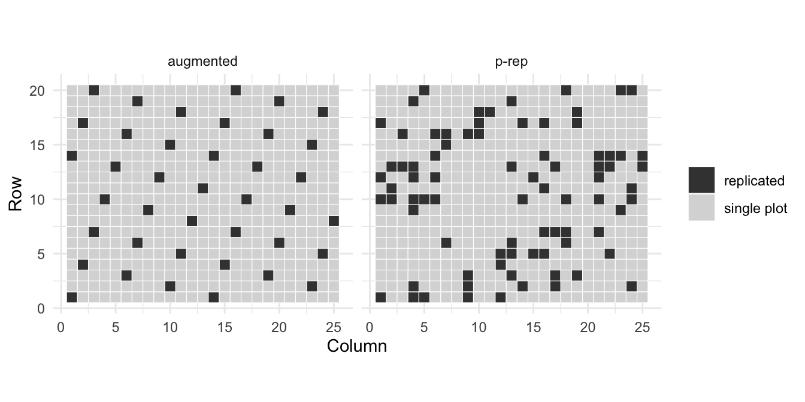

library(dplyr)
library(tidyr)
library(ggplot2)
library(lme4)
library(emmeans)
library(agridat) # install.packages("agridat") if needed
library(FielDHub) # install.packages("FielDHub") if needed5 Experimental Designs for Plant Breeding Trials
Author: Luis Fernando Delgado Muñoz
Session: Day 2, Tuesday 10 November
NoteSlides for this session
5.1 Learning objectives
- Explain the three principles of design: replication, randomization and local control
- Recognize the main designs used in breeding trials and when to use each one
- Generate and randomize field layouts with FielDHub
- Compare the precision of designs on a real field
- Write the statistical model implied by a design
In Chapter 4 we saw that much of the variation in a trial comes from the field, not from the genotypes. This chapter is about the decisions taken before sowing that control that variation. A good design does not make the field more uniform; it arranges the plots so that the field effects can be separated from the genotype effects in the analysis (Chapter 6 and Chapter 7).
5.2 Why design matters
Three principles, proposed by R. A. Fisher in the 1920s, are the basis of every field design:
| Principle | What it means | Why |
|---|---|---|
| Replication | Each genotype in more than one plot | Estimates the error; more plots per genotype give more precise means |
| Randomization | Genotypes allocated to plots at random | Avoids systematic advantages; makes the error estimate valid |
| Local control (blocking) | Similar plots grouped into blocks | Removes field variation from the comparison of genotypes |
5.2.1 What a field looks like without genotypes
The best way to see field variation is a uniformity trial: one single variety sown over the whole field and harvested plot by plot. Every difference between plots is then field, not genotype. The barley uniformity trial of Williams and Luckett (1988) has 720 plots in 15 rows and 48 columns:
williams <- williams.barley.uniformity |>
mutate(yield = yield / 100) # kg/ha divided by 10, converted to t/ha
ggplot(williams, aes(x = col, y = row, fill = yield)) +
geom_tile() +
scale_fill_viridis_c() +
coord_equal() +
labs(x = "Column", y = "Row", fill = "t/ha") +
theme_minimal()
williams |>
summarise(min = min(yield), max = max(yield),
variance = var(yield), sd = sd(yield)) min max variance sd
1 1.45 3.29 0.08360067 0.2891378
With a single variety, yield goes from 1.45 to 3.29 t/ha, with a standard deviation of 0.29 t/ha. Two genotypes that differ by 0.3 t/ha could swap positions just by the plots they happen to fall on. The map also shows that neighbouring plots are more similar than distant ones, and that the variation is not the same in both directions. There is even a systematic pattern linked to groups of three columns:
williams |>
group_by(col) |>
summarise(yield = mean(yield)) |>
mutate(position = factor((col - 1) %% 3 + 1)) |>
ggplot(aes(col, yield)) +
geom_line(colour = "grey60") +
geom_point(aes(colour = position), size = 2) +
labs(x = "Column", y = "Mean yield (t/ha)",
colour = "Position in\nseeder pass") +
theme_minimal()
williams |>
group_by(position = (col - 1) %% 3 + 1) |>
summarise(yield = mean(yield))# A tibble: 3 × 2
position yield
<dbl> <dbl>
1 1 2.32
2 2 2.45
3 3 2.53
The trial was sown with a three-plot seeder, and Williams noted that the yield depends on the position of the plot in each pass. Columns in the first position of each group of three yield on average about 0.1 to 0.2 t/ha less than the other two. This is extraneous variation: it comes from how the trial was managed, not from the soil. Blocks that follow the columns will capture it; large blocks will not.
5.2.2 Complications in breeding trials
Classical designs were developed for experiments with a few treatments. Breeding trials are different:
- There is one factor, the genotype, with many levels (from 100 to several thousand lines).
- Replication is costly, and in early generations there is often seed for only one plot.
- The field is heterogeneous in more than one direction, as the uniformity trial shows.
With 300 genotypes, a complete block has 300 plots: it is too large to be uniform. The solution is incomplete blocks: blocks smaller than the number of genotypes.
5.3 The main designs
5.3.1 Classical designs
| Design | Structure | Use in breeding |
|---|---|---|
| CRD, completely randomized | Genotypes allocated at random to all plots, no blocks | Uniform conditions only: growth chambers, some greenhouse trials |
| RCBD, randomized complete blocks | Each block contains every genotype once | Few genotypes (up to about 20 to 30), for example advanced yield trials |
| Augmented | New lines in one plot each; checks replicated in every block | Early generations with seed for one plot, many lines |
The RCBD was used in Chapter 4 for the Nebraska wheat trial (stroup.nin): 56 genotypes in blocks of 56 plots. Its low-yield corner was smaller than a block, so the blocks could not remove it. The augmented design was introduced in Chapter 3 with kling.augmented.
5.3.2 Designs with incomplete blocks
| Design | Blocks formed in | Blocks grouped in complete replicates (resolvable) |
|---|---|---|
| Alpha-lattice | One direction (for example columns) | Yes |
| Row-column | Two directions (rows and columns) | No |
| Resolvable row-column | Two directions (rows and columns) | Yes |
| Partially replicated (p-rep) | Usually analysed with rows, columns and spatial terms | No |
Alpha-lattice (Patterson and Williams, 1976). Each replicate is divided into \(s\) incomplete blocks of \(k\) plots, so the number of genotypes is \(t = s \times k\). Each replicate contains all the genotypes. Pairs of genotypes occur together in a block once or never (an \(\alpha(0,1)\) design), and the allocation is chosen to give the lowest average variance of the differences between genotypes. The bean trial of this course is an alpha-lattice: 380 lines in 2 replicates of 396 plots (16 checks appear twice in each replicate), each replicate with 18 blocks of 22 plots (11 rows by 2 columns).
Row-column designs block in two directions at the same time: every row and every column is an incomplete block. In the resolvable version, the field is first divided into complete replicates, and rows and columns are blocks within each replicate. Randomization is not simple, because the design must be balanced in both directions; software such as FielDHub searches for a good allocation.
Partially replicated (p-rep) designs (Cullis et al., 2006) replicate only a fraction of the test lines (for example 20%) and sow the rest in one plot. The replicated lines provide the estimate of error, instead of repeating the same check many times.
5.4 Comparing designs on a real field
How much does each design gain? We can answer this with real data: lay each design over the uniformity trial as if 360 genotypes had been sown in 2 replicates (720 plots), and analyse the blank field with the model of each design. Because there is only one variety, the true differences between “genotypes” are zero: everything the model attributes to error is real field variation that the design did not remove.
This approach follows the course Genotype to phenotype modelling of multi-environment trials (Biometris, Wageningen University and Research, 2021), which used the same uniformity trial. There, simulated genetic effects were added on top of the field; here we do not simulate anything.
5.4.1 Generating the layouts with FielDHub
All layouts have 360 entries in 2 replicates. Replicate 1 occupies columns 1 to 24 and replicate 2 columns 25 to 48 (15 rows by 24 columns each).
nt <- 360 # number of entries
crd <- CRD(t = nt, reps = 2, seed = 2026)
rcbd <- RCBD(t = nt, reps = 2, seed = 2026)
alpha <- alpha_lattice(t = nt, k = 15, r = 2, seed = 2026) # 24 blocks of 15 per rep
rowcol <- row_column(t = nt, nrows = 15, r = 2, iterations = 50, seed = 2026)
head(alpha$fieldBook) ID LOCATION PLOT REP IBLOCK UNIT ENTRY TREATMENT
1 1 1 101 1 1 1 344 G-344
2 2 1 102 1 1 2 162 G-162
3 3 1 103 1 1 3 133 G-133
4 4 1 104 1 1 4 131 G-131
5 5 1 105 1 1 5 63 G-63
6 6 1 106 1 1 6 237 G-237Each design returns a field book: one row per plot, with the replicate, the block and the entry. We place the plots on the field (each incomplete block of the alpha-lattice is one column of 15 plots) and join them with the uniformity yields:
fill_columns <- function(fb) { # plots in order, column by column within each rep
fb |>
group_by(REP) |>
mutate(i = row_number(),
col = (REP - 1) * 24 + ceiling(i / 15),
row = (i - 1) %% 15 + 1) |>
ungroup()
}
on_field <- function(fb) {
fb |>
inner_join(williams, by = c("row", "col")) |>
mutate(across(c(REP, TREATMENT), factor),
rowf = factor(row), colf = factor(col))
}
d_crd <- crd$fieldBook |> mutate(REP = 1) |> fill_columns() |> on_field() # one 15 x 48 field
d_rcbd <- rcbd$fieldBook |> fill_columns() |> on_field()
d_alpha <- alpha$fieldBook |>
mutate(col = (REP - 1) * 24 + IBLOCK, row = UNIT) |>
on_field() |> mutate(IBLOCK = factor(IBLOCK))
d_rowcol <- rowcol$fieldBook |>
mutate(col = (REP - 1) * 24 + COLUMN, row = ROW) |>
on_field()ggplot(d_alpha, aes(col, row, fill = factor(as.integer(IBLOCK) %% 2))) +
geom_tile(colour = "white") +
geom_vline(xintercept = 24.5, linewidth = 1) +
scale_fill_manual(values = c("grey70", "grey88"), guide = "none") +
coord_equal() +
labs(x = "Column", y = "Row") +
theme_minimal()
5.4.2 Fitting the model of each design
Each design implies its own model. Genotypes are fixed here, because we want to compare their means; incomplete blocks, rows and columns are random (see Section 5.9).
fit_crd <- lm(yield ~ TREATMENT, data = d_crd)
fit_rcbd <- lm(yield ~ REP + TREATMENT, data = d_rcbd)
fit_alpha <- lmer(yield ~ REP + (1 | REP:IBLOCK) + TREATMENT, data = d_alpha)
fit_rowcol <- lmer(yield ~ REP + (1 | REP:rowf) + (1 | REP:colf) + TREATMENT,
data = d_rowcol)The precision of a design is measured by the standard error of the difference (SED) between two genotype means: the smaller, the smaller the differences the trial can detect. With incomplete blocks the SED is not the same for every pair (it depends on whether two genotypes shared a block), so we use the average over all pairs:
average_sed <- function(fit) {
V <- vcov(emmeans(fit, "TREATMENT", lmer.df = "asymptotic")) # covariance of the means
n <- nrow(V)
mean_var <- mean(diag(V))
mean_cov <- (sum(V) - sum(diag(V))) / (n * (n - 1))
sqrt(2 * (mean_var - mean_cov)) # average variance of a difference = 2 (var - cov)
}
designs <- tibble(
design = c("CRD", "RCBD", "Alpha-lattice", "Resolvable row-column"),
sed = c(average_sed(fit_crd), average_sed(fit_rcbd),
average_sed(fit_alpha), average_sed(fit_rowcol))
) |>
mutate(LSD = 2 * sed, # approximate least significant difference (5%)
relative_to_RCBD = round(100 * (sed[2] / sed)^2))
designs# A tibble: 4 × 4
design sed LSD relative_to_RCBD
<chr> <dbl> <dbl> <dbl>
1 CRD 0.291 0.582 96
2 RCBD 0.285 0.570 100
3 Alpha-lattice 0.256 0.512 124
4 Resolvable row-column 0.196 0.393 211On the same field, with the same number of plots, the average SED goes from 0.285 t/ha in the RCBD to 0.256 in the alpha-lattice and 0.196 in the resolvable row-column design. The last column is the relative efficiency: the resolvable row-column design is as precise as an RCBD with about 2.1 times as many replicates, at no extra cost in land or seed.
Three lessons:
- The RCBD gains nothing over the CRD here. The two halves of this field have almost the same mean yield, so the two large blocks remove almost no variation. A different randomization changes the numbers slightly, but not this conclusion.
- Small blocks help. The alpha blocks follow the columns, so they capture the column-to-column variation, including the seeder pattern of Figure 5.2.
- Blocking in two directions helps most, because this field varies along rows and along columns.
The Wageningen course obtained the same ranking with simulated genotypes on the same field (LSD of 0.57, 0.41 and 0.36 t/ha for RCBD, alpha and resolvable row-column). The gain of a design depends on the field: in a field without trends the incomplete blocks gain little, but they rarely lose, and the model can tell how much they helped (the block variance).
5.5 Real trials and their designs
5.5.1 An alpha-lattice: the bean trial
beans <- readr::read_csv("data/Example_Beans.csv", show_col_types = FALSE)
beans |>
mutate(block_n = as.integer(sub("B", "", block))) |>
ggplot(aes(row, col, fill = factor((block_n + (block_n - 1) %/% 6) %% 2))) +
geom_tile(colour = "white") +
geom_hline(yintercept = 6.5, linewidth = 1) +
scale_fill_manual(values = c("grey70", "grey88"), guide = "none") +
scale_y_continuous(breaks = c(3.5, 9.5), labels = c("R1", "R2")) +
labs(x = "Field row", y = NULL) +
theme_minimal()
The model of an alpha-lattice has replicates and blocks within replicates:
\[ y_{ijk} = \mu + R_j + b_{k(j)} + G_i + \varepsilon_{ijk}, \qquad b_{k(j)} \sim N(0, \sigma^2_b), \quad \varepsilon_{ijk} \sim N(0, \sigma^2_\varepsilon) \]
where \(R_j\) is replicate \(j\), \(b_{k(j)}\) is block \(k\) within replicate \(j\), and \(G_i\) is genotype \(i\). Note that B1 in R1 and B1 in R2 are different blocks: the term must be written rep:block, not block.
5.5.2 A resolvable row-column design: Australian wheat
The second dataset comes from 14 wheat trials in Australia (7 locations in 2008 and 2009), each laid out as a resolvable row-column design. It was used in the Wageningen course and is used here with permission. We look at the trial WH09 (Wongan Hills, 2009):
wheat <- readr::read_csv("data/wheat_Australia_2008_2009_7loc.csv",
show_col_types = FALSE)
wh09 <- wheat |>
filter(Trial == "WH09") |>
mutate(across(c(rep, row, col, geno), factor))
wh09 |> count(rep)# A tibble: 2 × 2
rep n
<fct> <int>
1 1 203
2 2 203wh09 |> count(geno, name = "plots") |> count(plots, name = "genotypes")# A tibble: 3 × 2
plots genotypes
<int> <int>
1 1 2
2 2 178
3 4 12The trial has 406 plots in 2 replicates; most genotypes have 2 plots, 12 have 4 and 2 have only one. Each replicate occupies 6 columns and 34 rows:
ggplot(wh09, aes(as.integer(row), as.integer(col), fill = yield)) +
geom_tile(colour = "white") +
geom_hline(yintercept = 6.5, linewidth = 1) +
scale_fill_viridis_c() +
labs(x = "Row", y = "Column", fill = "t/ha") +
theme_minimal()
The model of a resolvable row-column design has replicates, and rows and columns within replicates:
\[ y_{ijkm} = \mu + Rep_m + r_{j(m)} + c_{k(m)} + G_i + \varepsilon_{ijkm} \]
Rows and columns are incomplete blocks, so they are random. If we ignore them and analyse the trial as an RCBD (replicates only), the field variation stays in the error:
m_rcbd <- lmer(yield ~ rep + (1 | geno), data = wh09)
m_rowcol <- lmer(yield ~ rep + (1 | rep:row) + (1 | rep:col) + (1 | geno),
data = wh09)
print(VarCorr(m_rcbd), comp = "Variance") Groups Name Variance
geno (Intercept) 0.058336
Residual 0.300582print(VarCorr(m_rowcol), comp = "Variance") Groups Name Variance
geno (Intercept) 0.087010
rep:row (Intercept) 0.011957
rep:col (Intercept) 0.107317
Residual 0.174646With the row-column model the residual variance falls from about 0.30 to 0.17, and most of the field variation is between columns (0.107), much less between rows (0.012). The genotype variance becomes larger, because part of what looked like error was field. How this translates into heritability is the topic of Section 7.7.
Note
row or rep:row?
In WH09 the row numbers 1 to 34 are used in both replicates. (1 | row) would treat row 5 of replicate 1 and row 5 of replicate 2 as the same block, although they are in different parts of the field. In a resolvable design, rows and columns are nested within replicates: write (1 | rep:row) + (1 | rep:col), or number the rows and columns so that each one is unique in the field.
5.6 Early generations: augmented and p-rep designs
In M2 to M4 populations there are hundreds or thousands of lines, seed is limited, and most lines can be sown in one plot only. Two designs are used:
- Augmented designs: the test lines are not replicated; a few checks (in mutation breeding, at least the parent variety) are repeated many times. The error is estimated only from the checks.
- p-rep designs: a fraction of the test lines (for example 10% to 30%) is sown in two plots, the rest in one. The replicated test lines estimate the error, and no plots are spent on repeating checks (although checks can be included).
5.6.1 Both designs on the Mercer and Hall field
We compare them again on a real uniformity trial: the wheat trial of Mercer and Hall (1911) at Rothamsted, 500 plots in 20 rows and 25 columns. Both designs test 460 entries in 500 plots:
- Augmented (FielDHub
diagonal_arrangement()): 460 unreplicated lines plus 4 checks in 39 plots, placed on diagonals across the field. - p-rep (FielDHub
partially_replicated()): 40 lines in 2 plots and 420 lines in 1 plot.
mercer <- mercer.wheat.uniformity |>
rename(ROW = row, COLUMN = col)
prep <- partially_replicated(nrows = 20, ncols = 25,
repGens = c(40, 420), repUnits = c(2, 1),
seed = 2026)
aug <- diagonal_arrangement(nrows = 20, ncols = 25, lines = 460,
checks = 4, seed = 2026)
prep$fieldBook |> count(TREATMENT, name = "plots") |> count(plots)# A tibble: 2 × 2
plots n
<int> <int>
1 1 420
2 2 40aug$fieldBook |> count(is_check = CHECKS > 0) is_check n
1 FALSE 461
2 TRUE 39bind_rows(
prep$fieldBook |>
add_count(TREATMENT) |>
transmute(ROW, COLUMN, design = "p-rep",
type = if_else(n > 1, "replicated", "single plot")),
aug$fieldBook |>
transmute(ROW, COLUMN, design = "augmented",
type = if_else(CHECKS > 0, "replicated", "single plot"))
) |>
ggplot(aes(COLUMN, ROW, fill = type)) +
geom_tile(colour = "white") +
facet_wrap(~design) +
scale_fill_manual(values = c(replicated = "grey25", `single plot` = "grey85")) +
coord_equal() +
labs(x = "Column", y = "Row", fill = NULL) +
theme_minimal()
Both trials are analysed with the same model: entries fixed, rows and columns random. Because the field is blank, we can measure two things for the unreplicated lines:
- the SED reported by the model, which is what the breeder would see;
- the true SED: the true differences between entries are zero, so the observed spread of the estimated means of the unreplicated lines is pure error (\(\sqrt{2 \times \text{variance of the means}}\)).
One randomization can be lucky or unlucky, so we repeat both designs with 10 different seeds:
sed_single_plots <- function(fb) {
d <- fb |>
filter(TREATMENT != "Filler") |>
inner_join(mercer, by = c("ROW", "COLUMN")) |>
mutate(TREATMENT = factor(TREATMENT),
rowf = factor(ROW), colf = factor(COLUMN))
fit <- lmer(grain ~ TREATMENT + (1 | rowf) + (1 | colf), data = d)
em <- emmeans(fit, "TREATMENT", lmer.df = "asymptotic")
single <- table(d$TREATMENT)[as.character(summary(em)$TREATMENT)] == 1
V <- vcov(em)[single, single]
n <- nrow(V)
c(model_sed = sqrt(2 * (mean(diag(V)) - (sum(V) - sum(diag(V))) / (n * (n - 1)))),
true_sed = sqrt(2 * var(summary(em)$emmean[single])))
}
seeds <- 1:10
results <- bind_rows(
lapply(seeds, \(s) sed_single_plots(
partially_replicated(nrows = 20, ncols = 25, repGens = c(40, 420),
repUnits = c(2, 1), seed = s)$fieldBook)) |>
bind_rows() |> mutate(design = "p-rep"),
lapply(seeds, \(s) sed_single_plots(
diagonal_arrangement(nrows = 20, ncols = 25, lines = 460,
checks = 4, seed = s)$fieldBook)) |>
bind_rows() |> mutate(design = "augmented")
)
results |>
group_by(design) |>
summarise(across(c(model_sed, true_sed), mean))# A tibble: 2 × 3
design model_sed true_sed
<chr> <dbl> <dbl>
1 augmented 0.455 0.633
2 p-rep 0.557 0.644The result is a warning more than a winner:
- The true precision is the same for both designs (true SED close to 0.63 t/ha). With one plot per line, a line’s value is its single plot, whatever the design.
- The augmented design reports a precision that is too optimistic. Its error is estimated from only 39 check plots, and the model SED is clearly smaller than the true SED. The p-rep design estimates the error from 40 pairs of test lines spread over the field, and its model SED is closer to the truth.
- In the p-rep design the replicated plots are test lines, so 40 candidates get two observations instead of repeating 4 checks; in the augmented design the checks give information about the field, but none about the candidates.
- For both designs, rows and columns remove little variation from single plots. Unreplicated trials need the spatial models of Chapter 9 to use the information of neighbouring plots.
Mutation-specific designs (how many M2 plants, how to place the parent, family structure) are developed in Chapter 14.
5.7 Choosing a design by breeding stage
| Stage | Entries | Seed and replicates | Recommended design |
|---|---|---|---|
| M2 to M3, early generations | Hundreds to thousands | One plot per line | Augmented with the parent as check, or p-rep if some lines have seed for 2 plots; spatial analysis |
| Preliminary yield trial | 100 to 400 | 2 replicates | Alpha-lattice or resolvable row-column |
| Advanced yield trial | 20 to 60 | 3 or 4 replicates | Alpha-lattice; RCBD only with few entries in a uniform field |
| Multi-location trials | 10 to 50 | 2 to 4 replicates per location | Alpha-lattice or resolvable row-column at each location |
| Greenhouse or phenotyping platform | Any | Benches, trays, conveyor positions | Row-column: rows and columns of the bench are real blocks |
Two practical rules:
- Choose the block size from the field, not from the number of entries. Blocks should be small enough to be uniform: in field trials, blocks of 5 to 20 plots are common.
- Write down the layout before sowing (field book with replicate, block, row and column), and keep the row and column of every plot. Without coordinates, the field effects cannot be modelled later (Chapter 9).
5.8 Generating layouts with FielDHub
FielDHub (Murillo et al., 2021) generates and randomizes all the designs of this chapter, as an R package and as a Shiny app:
FielDHub::run_app() # opens the app in the browserThe app has one tab per design. You enter the number of entries, replicates, block size or field dimensions, and it returns the layout map and the field book, which can be downloaded as a CSV file.
In R, the same is done with one function per design:
| Design | FielDHub function |
|---|---|
| CRD | CRD(t, reps) |
| RCBD | RCBD(t, reps) |
| Augmented RCBD | RCBD_augmented(lines, checks, b) |
| Augmented, diagonal checks | diagonal_arrangement(nrows, ncols, lines, checks) |
| Alpha-lattice | alpha_lattice(t, k, r) |
| Resolvable row-column | row_column(t, nrows, r) |
| p-rep | partially_replicated(nrows, ncols, repGens, repUnits) |
Always set seed: the same seed gives the same layout, so the randomization can be reproduced and documented. Use real names for the entries with the argument data, and give the field book the column names of the course template (Chapter 2) before taking it to the field:
entries <- data.frame(ENTRY = 1:30,
NAME = c("Parent", paste0("M3-", sprintf("%03d", 1:29))))
design <- alpha_lattice(t = 30, k = 5, r = 3, seed = 2026, data = entries)
field_book <- design$fieldBook |>
transmute(location = "Skopje", year = 2027, rep = REP, block = IBLOCK,
plot = PLOT, geno = TREATMENT)
head(field_book) location year rep block plot geno
1 Skopje 2027 1 1 101 M3-027
2 Skopje 2027 1 1 102 M3-015
3 Skopje 2027 1 1 103 M3-012
4 Skopje 2027 1 1 104 M3-020
5 Skopje 2027 1 1 105 M3-022
6 Skopje 2027 1 2 106 M3-001plot(design) # layout map
write.csv(field_book, "my_alpha_field_book.csv", row.names = FALSE)5.9 From layout to statistical model
The design determines the model. Every restriction of the randomization (replicate, block, row, column) becomes a term:
# genotypes fixed; incomplete blocks, rows and columns random
lm(y ~ geno) # CRD
lm(y ~ rep + geno) # RCBD
lm(y ~ block + geno) # Augmented (or rows and columns random)
lmer(y ~ rep + (1 | rep:block) + geno) # Alpha-lattice
lmer(y ~ (1 | row) + (1 | col) + geno) # Row-column
lmer(y ~ rep + (1 | rep:row) + (1 | rep:col) + geno) # Resolvable row-column
lmer(y ~ geno + (1 | row) + (1 | col)) # p-rep, usually with a spatial termThree rules:
- Complete blocks (replicates) can be fixed or random: every genotype is in every block, so blocks and genotypes are independent.
- Incomplete blocks, rows and columns should be random. A genotype is not in every block, so part of the information about genotypes is between blocks; random blocks recover it.
- Genotypes are fixed to compare and select them (BLUEs), and random to estimate the genetic variance and heritability (BLUPs). Both models are fitted, as shown in Chapter 7.
5.10 Exercise
The dataset john.alpha in agridat is a real spring oats trial from Craibstone, near Aberdeen (John and Williams, 1995): 24 varieties in an alpha-lattice with 3 replicates, each with 6 incomplete blocks of 4 plots.
- Check the design: how many plots per replicate, how many blocks per replicate, how many plots per block?
- Fit the model of an RCBD (replicates only) and the model of the alpha-lattice (blocks within replicates, random). Compare the residual variance and the average SED of the two models.
- Generate a new alpha-lattice for the same trial (24 entries, blocks of 4, 3 replicates) with FielDHub, and look at its field book.
TipSolution
# 1. Check the design
john.alpha |> count(rep) rep n
1 R1 24
2 R2 24
3 R3 24john.alpha |> count(rep, block) |> count(rep, plots_per_block = n) rep plots_per_block n
1 R1 4 6
2 R2 4 6
3 R3 4 6# 2. RCBD model vs alpha model
oats_rcbd <- lm(yield ~ rep + gen, data = john.alpha)
oats_alpha <- lmer(yield ~ rep + (1 | rep:block) + gen, data = john.alpha)
sigma(oats_rcbd)^2 # residual variance, RCBD model[1] 0.134586print(VarCorr(oats_alpha), comp = "Variance") Groups Name Variance
rep:block (Intercept) 0.061944
Residual 0.085225average_sed_gen <- function(fit) {
V <- vcov(emmeans(fit, "gen", lmer.df = "asymptotic"))
n <- nrow(V)
sqrt(2 * (mean(diag(V)) - (sum(V) - sum(diag(V))) / (n * (n - 1))))
}
c(rcbd = average_sed_gen(oats_rcbd), alpha = average_sed_gen(oats_alpha)) rcbd alpha
0.2995396 0.2647806 # 3. A new randomization of the same design
new_alpha <- alpha_lattice(t = 24, k = 4, r = 3, seed = 2026)
head(new_alpha$fieldBook) ID LOCATION PLOT REP IBLOCK UNIT ENTRY TREATMENT
1 1 1 101 1 1 1 12 G-12
2 2 1 102 1 1 2 19 G-19
3 3 1 103 1 1 3 11 G-11
4 4 1 104 1 1 4 1 G-1
5 5 1 105 1 2 1 22 G-22
6 6 1 106 1 2 2 20 G-20The block variance is a large part of the field variation. With the blocks in the model, the residual variance falls from 0.135 to 0.085, and the average SED from about 0.30 to 0.26 t/ha. Analysing an alpha-lattice as an RCBD throws away the information of the blocks.
5.11 Key takeaways
- Replication estimates the error, randomization makes it valid, and blocking removes field variation from the comparisons.
- Fields vary at short distances and in more than one direction. Breeding trials, with many entries, need incomplete blocks: alpha-lattice or row-column designs.
- On a real uniformity field, the resolvable row-column design was about twice as efficient as the RCBD, with the same plots and seed.
- For early generations with limited seed, augmented and p-rep designs have the same true precision, but the augmented design overstates it; analyse both with spatial models.
- The design determines the model: replicates, blocks within replicates, rows and columns within replicates. Incomplete blocks are random.
- Generate layouts with FielDHub, set the seed, and keep the row and column of every plot.
5.12 References
- Cullis, B. R., Smith, A. B., & Coombes, N. E. (2006). On the design of early generation variety trials with correlated data. Journal of Agricultural, Biological, and Environmental Statistics, 11(4), 381-393. https://doi.org/10.1198/108571106X154443
- Bustos-Korts, D., Adams, J., & van Eeuwijk, F. (2021). Genotype to phenotype modelling of multi-environment trials, course materials (lecture “Analysis of advanced experimental designs” and Practical 1). Biometris, Wageningen University and Research. Australian wheat data used with permission.
- Federer, W. T. (1956). Augmented (or hoonuiaku) designs. Hawaiian Planters’ Record, 55, 191-208.
- John, J. A., & Williams, E. R. (1995). Cyclic and Computer Generated Designs (2nd ed.). Chapman and Hall. Data:
agridat::john.alpha. - Mercer, W. B., & Hall, A. D. (1911). The experimental error of field trials. The Journal of Agricultural Science, 4(2), 107-132. https://doi.org/10.1017/S002185960000160X. Data:
agridat::mercer.wheat.uniformity. - Murillo, D. A., Gezan, S. A., Heilman, A. M., Walk, T. C., Aparicio, J. S., & Horsley, R. D. (2021). FielDHub: a Shiny app for design of experiments in life sciences. Journal of Open Source Software, 6(61), 3122. https://doi.org/10.21105/joss.03122
- Patterson, H. D., & Williams, E. R. (1976). A new class of resolvable incomplete block designs. Biometrika, 63(1), 83-92. https://doi.org/10.1093/biomet/63.1.83
- Stroup, W. W., Baenziger, P. S., & Mulitze, D. K. (1994). Removing spatial variation from wheat yield trials: a comparison of methods. Crop Science, 34(1), 62-66. https://doi.org/10.2135/cropsci1994.0011183X003400010011x
- Williams, E. R., & Luckett, D. J. (1988). The use of uniformity data in the design and analysis of cotton and barley variety trials. Australian Journal of Agricultural Research, 39(3), 339-350. https://doi.org/10.1071/AR9880339. Data:
agridat::williams.barley.uniformity. - Wright, K. (2024). agridat: Agricultural Datasets. R package version 1.27. https://kwstat.github.io/agridat/